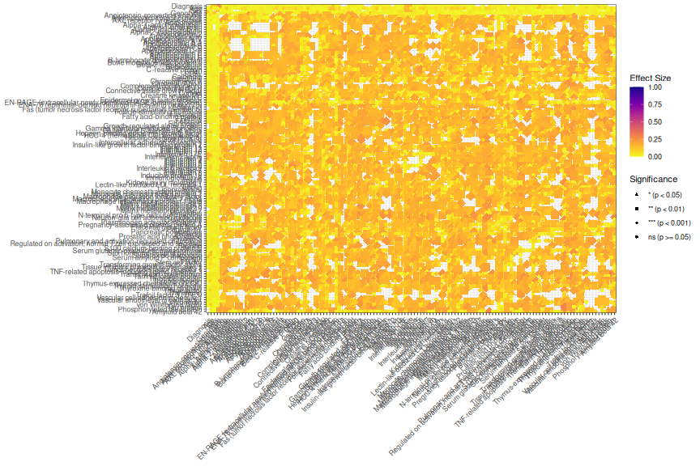
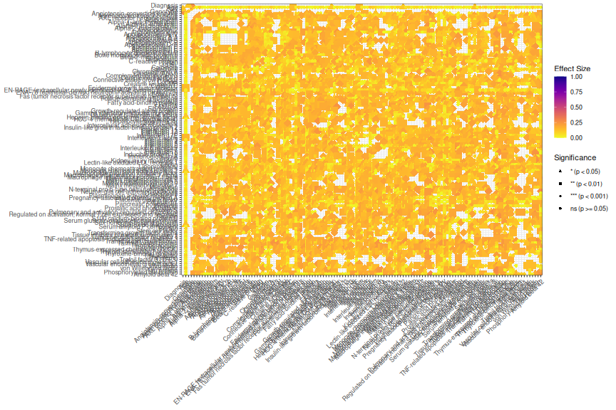
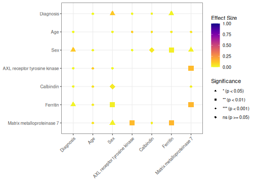

1 Overview
PlotMiningMatrix() is designed for exploratory data mining and hypothesis generation.
Rather than requiring separate correlation analyses, ANOVA models, and chi-square tests, the function automatically identifies appropriate statistical relationships based on variable type and summarizes the results in a single visualization.
This function is particularly useful for:
- Identifying unexpected relationships
- Detecting potential confounders and covariates
- Discovering clusters of related variables
- Generating hypotheses for future analyses
- Performing exploratory quality control
- Prioritizing variables for downstream modeling
Unlike a traditional correlation matrix, PlotMiningMatrix() can simultaneously evaluate:
- Continuous vs continuous relationships
- Categorical vs continuous relationships
- Categorical vs categorical relationships
using appropriate statistical methods for each comparison.
2 Load packages
3 Load example data
data("SampleData")
data("SampleVariableTypes")
RevaluedObj <- RevalueData(
SampleData,
SampleVariableTypes
)
df_Revalued <- RevaluedObj$RevaluedData4 Create a mining matrix
For exploratory mining it is often useful to evaluate nearly the entire dataset simultaneously.
MiningObj <- PlotMiningMatrix(
Data = df_Revalued,
OutcomeVars = vars_mining
)
MiningObj$Unadjusted$plot
The resulting visualization summarizes hundreds or thousands of statistical relationships simultaneously.
Color intensity represents effect size magnitude, while symbol size and shape represent statistical significance.
5 Understanding the statistical tests
PlotMiningMatrix() automatically selects appropriate analyses based on variable type.
| Variable Types | Statistical Test |
|---|---|
| Continuous vs Continuous | Correlation |
| Categorical vs Continuous | ANOVA |
| Categorical vs Categorical | Chi-square |
This allows mixed datasets to be explored without manually specifying separate analyses.
6 Interpreting the mining matrix
The mining matrix is best viewed as a discovery tool rather than a confirmatory analysis.
Questions it can help answer include:
- Which biomarkers appear related to diagnosis?
- Which demographic variables may act as covariates?
- Which variables tend to cluster together?
- Are there unexpected associations worth investigating?
- Are there patterns suggesting data quality issues?
Large effect sizes combined with strong significance often represent promising targets for follow-up analyses.
7 Parametric analyses
By default, parametric analyses are used.
MiningParametric <- PlotMiningMatrix(
Data = df_Revalued,
OutcomeVars = vars_mining,
Parametric = TRUE
)
MiningParametric$Unadjusted$plot
For continuous variables this uses Pearson correlations and parametric group comparisons.
8 Nonparametric analyses
For skewed variables or datasets containing substantial outliers, nonparametric methods may be preferable.
MiningNonParametric <- PlotMiningMatrix(
Data = df_Revalued,
OutcomeVars = vars_mining,
Parametric = FALSE
)
MiningNonParametric$Unadjusted$plot
This switches continuous-variable analyses to Spearman correlations and uses nonparametric group comparisons where applicable.
9 Unadjusted significance
The default plot displays significance based on unadjusted p-values.
MiningObj$Unadjusted$plot
This view is useful for exploratory analyses and hypothesis generation.
10 FDR-corrected significance
Because large mining matrices may involve hundreds or thousands of statistical tests, multiple-testing correction is often recommended.
MiningObj$FDRCorrected$plotNULLThe FDR-corrected visualization highlights relationships that remain significant after accounting for multiple comparisons.
In exploratory studies, investigators often review both unadjusted and FDR-corrected results.
11 Examining the underlying results
The statistical results are stored in the returned object.
head(
MiningObj$Unadjusted$PvalTable
)# A tibble: 6 × 11
XVar YVar p EffectSize Test p_adj stars XLabel YLabel
<chr> <chr> <dbl> <dbl> <chr> <dbl> <chr> <fct> <fct>
1 ACE_CD143_Angiot… ACTH… 4.03e- 8 0.295 Corr… 1.30e- 7 **** Angio… Adren…
2 ACE_CD143_Angiot… AXL 2.32e-51 0.705 Corr… 1.90e-49 **** Angio… AXL r…
3 ACE_CD143_Angiot… Adip… 1.40e- 1 0.0811 Corr… 1.89e- 1 ns Angio… Adipo…
4 ACE_CD143_Angiot… Alph… 2.13e- 5 0.231 Corr… 5.24e- 5 **** Angio… Alpha…
5 ACE_CD143_Angiot… Alph… 4.69e- 1 0.0399 Corr… 5.39e- 1 ns Angio… Alpha…
6 ACE_CD143_Angiot… Alph… 3.71e- 5 0.224 Corr… 8.90e- 5 **** Angio… Alpha…
# ℹ 2 more variables: EffectSizeAbs <dbl>, size_val <dbl>The table includes:
- Variables involved in the association
- Effect size estimates
- Raw p-values
- FDR-adjusted p-values
- Statistical test type
12 Interactive exploration
Large mining matrices can be easier to interpret interactively.
# Not evaluated in the shipped vignette to keep it lightweight - run interactively
ggplotly(
MiningObj$Unadjusted$plot
)Interactive plots allow users to:
- Hover over relationships
- Zoom into regions of interest
- Explore large datasets more efficiently
Interactive exploration is particularly useful for large omics and clinical datasets.
13 Identifying potential covariates
One common use of PlotMiningMatrix() is identifying variables that may need to be included as covariates in downstream analyses.
For example:
- Age may be associated with multiple biomarkers.
- Education may be associated with cognitive outcomes.
- Site may be associated with assay measurements.
Variables showing broad associations throughout the mining matrix often deserve consideration as potential confounders.
14 Targeted mining
Although PlotMiningMatrix() can evaluate nearly an entire dataset, it can also be restricted to a subset of variables.
selected_vars <- c(
"Diagnosis",
"age",
"sex",
"AXL",
"Calbindin",
"Ferritin",
"MMP7"
)
MiningSubset <- PlotMiningMatrix(
Data = df_Revalued,
OutcomeVars = selected_vars
)
MiningSubset$Unadjusted$plot
This approach is useful when focusing on a particular biological pathway or clinical domain.
15 Recommended workflow
A common SciDataReportR workflow is:
- Use
PlotMiningMatrix()to identify potentially interesting relationships. - Review FDR-corrected results.
- Identify potential covariates.
- Visualize significant findings using
plotSigAssociations(). - Perform targeted follow-up analyses using:
MakeComparisonTable()PlotCorrelationsHeatmap()- Regression models
- Longitudinal analyses
16 Summary
PlotMiningMatrix() provides a rapid overview of relationships within a dataset and is particularly useful for exploratory analyses and hypothesis generation.
Key features include:
- Automatic test selection
- Mixed continuous and categorical variables
- Effect size visualization
- FDR correction
- Identification of candidate covariates
- Interactive exploration
- Follow-up visualization workflows
17 Related functions
18 Session information
R version 4.6.1 (2026-06-24)
Platform: x86_64-pc-linux-gnu
Running under: Ubuntu 24.04.4 LTS
Matrix products: default
BLAS: /usr/lib/x86_64-linux-gnu/openblas-pthread/libblas.so.3
LAPACK: /usr/lib/x86_64-linux-gnu/openblas-pthread/libopenblasp-r0.3.26.so; LAPACK version 3.12.0
locale:
[1] LC_CTYPE=C.UTF-8 LC_NUMERIC=C LC_TIME=C.UTF-8
[4] LC_COLLATE=C.UTF-8 LC_MONETARY=C.UTF-8 LC_MESSAGES=C.UTF-8
[7] LC_PAPER=C.UTF-8 LC_NAME=C LC_ADDRESS=C
[10] LC_TELEPHONE=C LC_MEASUREMENT=C.UTF-8 LC_IDENTIFICATION=C
time zone: UTC
tzcode source: system (glibc)
attached base packages:
[1] stats graphics grDevices utils datasets methods base
other attached packages:
[1] plotly_4.12.0 ggplot2_4.0.3 dplyr_1.2.1
[4] SciDataReportR_20.13.0
loaded via a namespace (and not attached):
[1] gtable_0.3.6 xfun_0.60 bayestestR_0.18.1
[4] htmlwidgets_1.6.4 insight_1.5.2 rstatix_1.0.0
[7] lattice_0.22-9 paletteer_1.7.0 vctrs_0.7.3
[10] tools_4.6.1 generics_0.1.4 datawizard_1.3.1
[13] tibble_3.3.1 pkgconfig_2.0.3 data.table_1.18.4
[16] RColorBrewer_1.1-3 correlation_0.8.8 S7_0.2.2
[19] RcppParallel_5.1.11-2 lifecycle_1.0.5 compiler_4.6.1
[22] farver_2.1.2 snakecase_0.11.1 carData_3.0-6
[25] htmltools_0.5.9 lazyeval_0.2.3 yaml_2.3.12
[28] Formula_1.2-5 pillar_1.11.1 car_3.1-5
[31] tidyr_1.3.2 viridis_0.6.5 statsExpressions_2.0.0
[34] abind_1.4-8 tidyselect_1.2.1 sjlabelled_1.2.0
[37] digest_0.6.39 mvtnorm_1.4-1 gtsummary_2.5.1
[40] purrr_1.2.2 rematch2_2.1.2 labeling_0.4.3
[43] forcats_1.0.1 ggstatsplot_1.0.0 labelled_2.16.0
[46] fastmap_1.2.0 grid_4.6.1 cli_3.6.6
[49] magrittr_2.0.5 patchwork_1.3.2 utf8_1.2.6
[52] dichromat_2.0-0.1 broom_1.0.13 withr_3.0.3
[55] scales_1.4.0 backports_1.5.1 estimability_2.0.0
[58] httr_1.4.8 rmarkdown_2.31 emmeans_2.0.3
[61] otel_0.2.0 gridExtra_2.3.1 hms_1.1.4
[64] coda_0.19-4.1 evaluate_1.0.5 knitr_1.51
[67] haven_2.5.5 parameters_0.29.2 viridisLite_0.4.3
[70] rstantools_2.6.0 rlang_1.3.0 xtable_1.8-8
[73] glue_1.8.1 jsonlite_2.0.0 effectsize_1.0.3
[76] R6_2.6.1